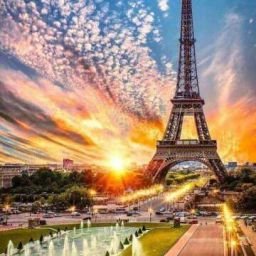

Lugares Turísticos na Europa
Introdução
A Europa é um continente repleto de história, cultura e belezas naturais. Cada país, cidade e vilarejo tem sua própria riqueza e singularidade. Abaixo, apresentamos alguns dos destinos turísticos mais deslumbrantes deste continente.
Destinos Principais
Paris, França

Conhecida como a "Cidade da Luz", Paris é o destino perfeito para os amantes da arte, moda e história.
Roma, Itália

A "Cidade Eterna" oferece um passeio pelo tempo com seus monumentos antigos e igrejas grandiosas.
Praga, República Checa
Conhecida como a "Cidade das Cem Torres", Praga é uma das cidades medievais mais bem preservadas do mundo.
Santorini, Grécia
Esta ilha no Mar Egeu é famosa por suas casas brancas, igrejas de cúpula azul e vistas deslumbrantes do pôr do sol.
Destaques Culturais
- Museus: O Museu do Louvre em Paris e o Museu do Prado em Madrid são apenas dois exemplos dos muitos museus europeus que abrigam coleções inestimáveis de arte e história.
- Festivais: Desde o Festival de Cinema de Cannes até a Oktoberfest na Alemanha, a Europa é lar de diversos festivais que celebram a cultura, a arte e as tradições locais.
Dicas de Viagem
- Transporte: A Europa tem uma excelente rede de trens. Considere adquirir um passe Eurail para viajar entre diferentes países de forma econômica.
- Moeda: A maioria dos países europeus utiliza o Euro, mas alguns ainda têm sua própria moeda. Certifique-se de verificar isso antes de viajar.
- Clima: As estações na Europa são bem definidas. Planeje sua viagem de acordo com a estação que prefere, seja o inverno nevado ou o verão ensolarado.
Conclusão
A Europa é um continente que oferece experiências inesquecíveis para todos os tipos de turistas. Seja explorando cidades históricas, degustando a culinária local ou relaxando nas praias do Mediterrâneo, há algo para todos na Europa.
Links úteis: